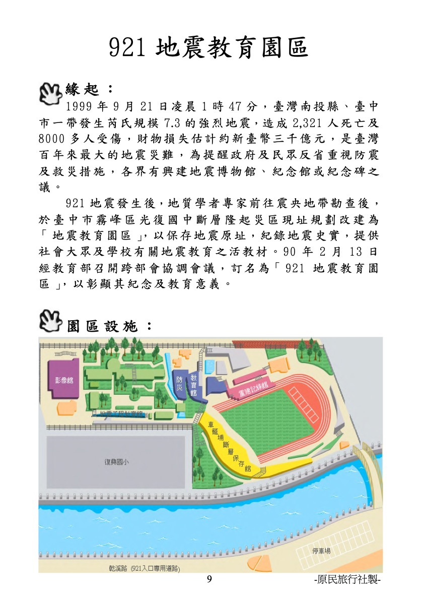
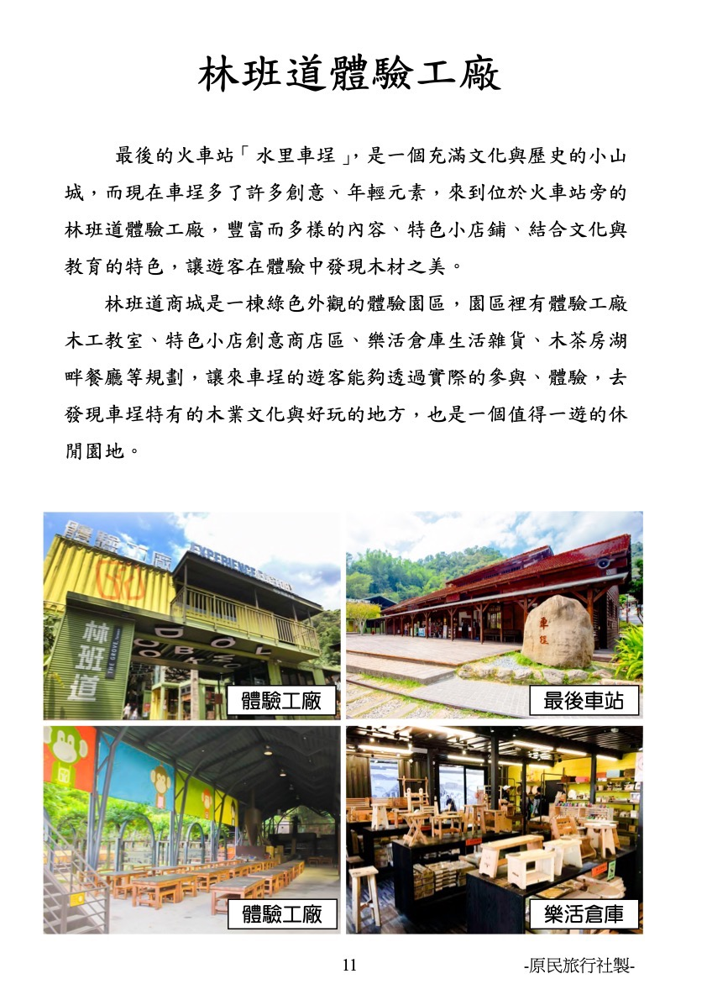
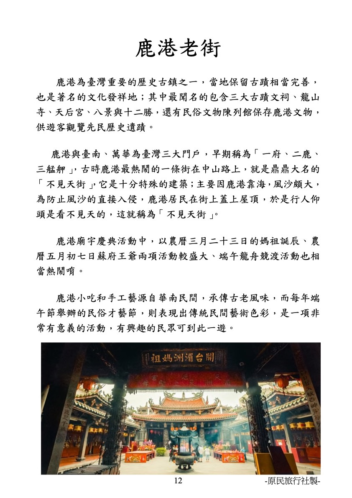
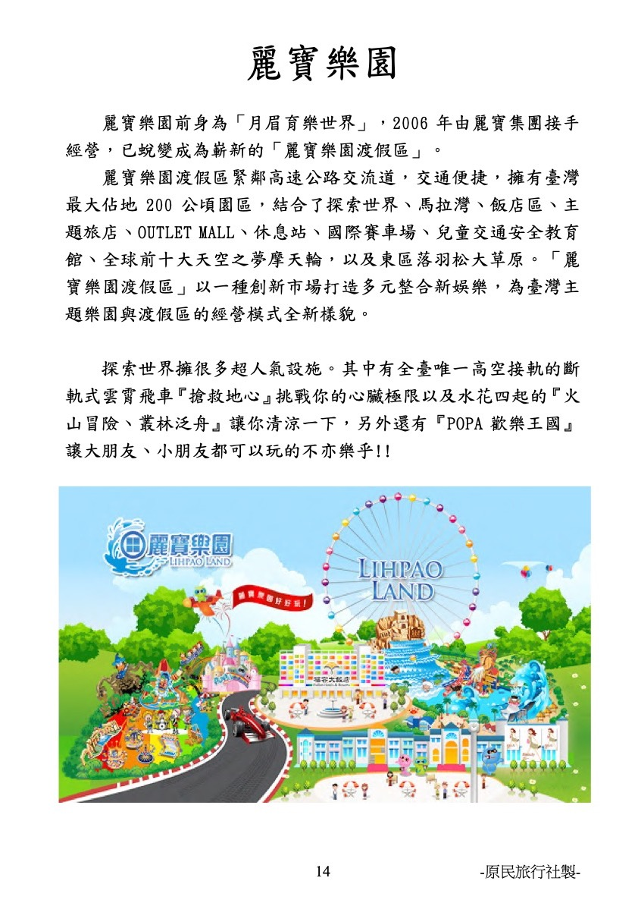
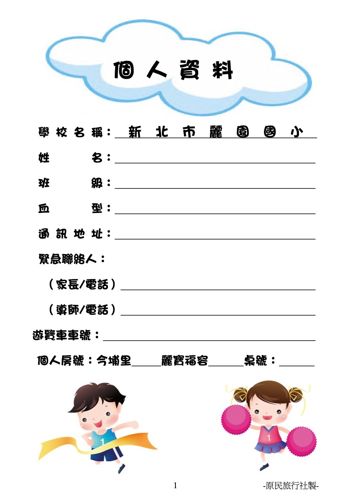

📍 新北市林口區麗園國民小學
🗓️ 115年11月25日～11月27日 (三天兩夜)
🚌 原民旅行社承辦
115 學年度 6 年級戶外教育參觀活動
為擴大學生學習領域及生活經驗，指導學生實踐生活規範並充實生活內容，開啟一段難忘的青春學習旅程！
三天行程表
每日站點與各天穿著
行李打包清單
隨身背包與換洗衣物
線上互動學習單
921、鹿港、麗寶樂園
緊急聯絡簿
飯店電話與一鍵導航
🏷️ 個人數位證件卡
資料自動儲存在手機，重開不消失📅
戶外教育活動行程表
06:30
集合完畢
學校集合完畢 ➔ 07:00 前準時出發
請攜帶隨身行李到班級指定位置集合點名，逾時交通請自理。認清並記下所屬遊覽車外觀、顏色及車牌號碼。
上午
歷史與科學活教材
921 地震教育園區
走訪臺中霧峰光復國中斷層遺址，實地參觀車籠埔斷層保存館、影像館、地震工程教育館與防災館，深化防災觀念。
中午
美味午餐
享用午餐
各班級依安排桌號就座用餐，養成良好用餐禮儀，不浪費食物，自備環保餐具與水壺。
下午
鐵道木業文化
林班道體驗工廠（水里車埕）
漫遊最後的火車站「水里車埕」，體驗木工創作教室、特色小店聚落、樂活倉庫生活雜貨與木茶房湖畔風光。
傍晚
住宿辦理
今埔里渡假大酒店 Check in ➔ 享用晚餐
辦理入住手續，隨隊領隊引導回房放置大件行李，房內物品愛惜使用。隨後享用豐盛晚餐。
晚上
團結同樂
歡樂團康活動 ➔ 21:00 晚點名
六年級全體同學互動同樂、增進同儕情誼。21:00各房晚點名，冷氣調至25度以上，整理好明日行李，安心就寢。
🎒
外出旅遊攜帶物品選取表
打包進度追蹤：
已準備 0 / 0 項 (0%)
🌱
因應減塑及環保政策，特別提醒：
1. 飯店不提供一次性盥洗用品（如牙刷、牙膏、梳子、浴帽等），請務必自行攜帶個人牙膏牙刷！
2. 本次旅程中皆不提供免洗餐具，請自備環保筷/餐具。
3. 旅途中不主動提供瓶裝水，請隨身攜帶個人環保水壺。
1. 飯店不提供一次性盥洗用品（如牙刷、牙膏、梳子、浴帽等），請務必自行攜帶個人牙膏牙刷！
2. 本次旅程中皆不提供免洗餐具，請自備環保筷/餐具。
3. 旅途中不主動提供瓶裝水，請隨身攜帶個人環保水壺。
🗺️
精選景點深度圖文導覽

921 地震教育園區
1999年9月21日凌晨1時47分，芮氏規模7.3強烈地震重創臺灣。為保存地震原址與紀錄史實，於臺中霧峰光復國中斷層隆起災區原址改建為園區，提供全體國民最深刻的地震教育活教材。
🏛️ 五大特色展館：
• 車籠埔斷層保存館：紀錄斷層地表破裂真實地貌與科學知識。
• 影像館：集結珍貴震災影像與各界送溫暖歷史紀錄。
• 地震工程教育館：毀壞校舍原址展示與耐震科學實驗。
• 防災教育館：推廣事前的預防避難宣導觀念。
• 重建記錄館：呈現社區凝聚、住宅重建與產業重生歷程。
• 車籠埔斷層保存館：紀錄斷層地表破裂真實地貌與科學知識。
• 影像館：集結珍貴震災影像與各界送溫暖歷史紀錄。
• 地震工程教育館：毀壞校舍原址展示與耐震科學實驗。
• 防災教育館：推廣事前的預防避難宣導觀念。
• 重建記錄館：呈現社區凝聚、住宅重建與產業重生歷程。

林班道體驗工廠（水里車埕）
車埕被譽為臺灣「最後的火車站」，是充滿歷史底蘊的小山城。林班道是一棟綠意盎然的環保綠建築體驗園區，結合文化、教育與休閒，讓遊客透過親手體驗發現木材之美與鐵道歷史。
🪵 園區亮點巡禮：
• 體驗工廠木工教室：動手DIY手作木藝作品，感受木質溫潤手感。
• 創意商店區與樂活倉庫：匯聚生活雜貨、文創伴手禮。
• 木茶房湖畔景觀：依傍儲木池畔，飽覽水里山城水岸寧靜風光。
• 體驗工廠木工教室：動手DIY手作木藝作品，感受木質溫潤手感。
• 創意商店區與樂活倉庫：匯聚生活雜貨、文創伴手禮。
• 木茶房湖畔景觀：依傍儲木池畔，飽覽水里山城水岸寧靜風光。

鹿港老街歷史巡禮
鹿港為臺灣三大歷史門戶之一。昔日由於靠海風沙強烈，居民在街道上方加蓋屋頂，形成行人看不見天空的鼎鼎大名「不見天街」。漫步紅磚街道，曲折的九曲巷與古樸老宅宛如穿越時空隧道。
🏮 鹿港必看五大文化景點：
• 天后宮：國定古蹟，供奉湄洲開基媽祖神尊。
• 新祖宮：乾隆皇帝敕建官廟，立有「文武官員至此下馬」石碑。
• 半邊井：牆內自己用、牆外給鄰居，體現純樸溫厚人情味。
• 隘門：街角防禦性門樓，昔日防範宵小盜匪與分類械鬥。
• 餓鬼埕：昔日碼頭工人下船後狼吞虎嚥補充熱量的小吃市集。
• 天后宮：國定古蹟，供奉湄洲開基媽祖神尊。
• 新祖宮：乾隆皇帝敕建官廟，立有「文武官員至此下馬」石碑。
• 半邊井：牆內自己用、牆外給鄰居，體現純樸溫厚人情味。
• 隘門：街角防禦性門樓，昔日防範宵小盜匪與分類械鬥。
• 餓鬼埕：昔日碼頭工人下船後狼吞虎嚥補充熱量的小吃市集。

麗寶樂園渡假區（探索世界）
前身為「月眉育樂世界」，緊鄰后里交流道，佔地200公頃。探索世界擁有豐富多樣的超人氣設施，從挑戰心臟極限的高空斷軌到童趣盎然的歡樂王國，讓大朋友小朋友玩到欲罷不能！
🎢 三大超人氣主題園區：
• 冒險天堂：「搶救地心」全球首座斷軌雲霄飛車（13層樓高空垂直俯衝）、時空飛俠、碰碰車、火山冒險。
• 魔法森林：摩天輪、叢林泛舟、魔法咖啡杯、花園小舟。
• POPA歡樂王國：採礦飛車、海盜船、旋轉木馬、青蛙跳、人魚木舟。
🍕 特約午餐：享用必勝客個人獨享披薩套餐！
• 冒險天堂：「搶救地心」全球首座斷軌雲霄飛車（13層樓高空垂直俯衝）、時空飛俠、碰碰車、火山冒險。
• 魔法森林：摩天輪、叢林泛舟、魔法咖啡杯、花園小舟。
• POPA歡樂王國：採礦飛車、海盜船、旋轉木馬、青蛙跳、人魚木舟。
🍕 特約午餐：享用必勝客個人獨享披薩套餐！
✍️
戶外教育線上互動學習單
🛡️
行前叮嚀、安全規範與護理須知
🚶 行動與車上的安全
- 以小組為單位行動：絕不可單獨脫隊，任何時間離隊務必告知老師及領隊，獲准後才可離開，歸隊時也需回報。
- 車上安全：車子行進中全程繫妥安全帶，不可任意站立走動；嚴禁倚靠車門站立。
- 車內禁止飲食：車上禁止飲食，個人垃圾妥善包好帶下車丟棄。
- 上車注意鄰座：每次上車隨時確認同組同學是否到齊並向領隊回報。
- 遵守身體界線：不做推人、追逐等危險動作，遵守遊樂設施的身高安全限制。
- 若不慎迷路脫隊：請保持冷靜留在原地或直接尋求園區服務台廣播求助。
🏨 住宿安全與生活禮儀
- 記住自己房號桌號：不隨意進入他人房間，嚴禁男生進女生房或女生進男生房。
- 敲門安全：有人敲門時，務必透過防盜眼或詢問確認身分後再開門。
- 外出必帶房卡：離開房間隨手關門並攜帶房卡（鑰匙）；睡前確實鎖好門窗防盜扣。
- 冷氣溫度設定：建議不低於 25 度，以免夜間著涼影響隔日行程。
- 晚點名嚴禁離房：晚點名後禁止擅自離開房間，有事請以分機撥打飯店櫃檯或聯絡隨隊老師。
- 公德心與賠償：愛惜飯店設施，浴室請使用腳踏墊防滑，如有破壞或帶走公物將依名單追究賠償。
🩺 護理篇與簡易急救常識
- 💊 暈車藥：易暈車同學請於開車前半小時服用。
- ❄️ 早晚保暖：早晚溫差大，隨身預備禦寒薄外套，避免感冒。
- 🔥 灼燙傷處置：立即以流動冷水沖泡傷處 5～15 分鐘至不痛為止，切忌搓揉皮膚。
- 🩸 外傷流血：直接加壓止血，並抬高患肢 5～10 分鐘。
- 🩹 扭傷瘀腫：急性期（24-36小時內）局部間歇冰敷並抬高休息，切勿揉捏以免傷勢加劇。
⚠️ 法律重要宣導（護理人員法第24條）：
校外教學醫療輔助行為須在醫師指示下進行，隨隊護理師僅能提供外傷急救處置，依法校方與旅行社無法提供口服藥品，個人特殊疾病藥品請務必隨身備妥！
校外教學醫療輔助行為須在醫師指示下進行，隨隊護理師僅能提供外傷急救處置，依法校方與旅行社無法提供口服藥品，個人特殊疾病藥品請務必隨身備妥！
📋 觀光署國內旅遊退費規定
依交通部觀光署國內旅遊定型化契約第十二條規範：
- 旅遊活動開始前第 2 日至第 20 日以內取消：收取全額 30% 手續費。
- 旅遊活動開始前第 1 日取消：收取全額 50% 手續費。
- 旅遊活動開始日或開始後取消、未通知不參加者：僅退門票。
📞
重要聯絡資訊與住宿飯店導航
🏫 新北市麗園國民小學
新北市林口區忠孝路591號
🚩 原民旅行社（承辦單位）
專責六年級戶外教育行程服務
🏨 今埔里渡假大酒店 (第一晚)
南投縣埔里鎮南興街 79 號
🏨 麗寶福容大飯店 (第二晚)
台中市后里區福容路 88 號
🏛️ 各景點服務專線：
• 921地震教育園區：(04) 2339-0906
• 林班道體驗工廠：(049) 277-7462
• 薰衣草森林九九峰：(049) 600-4999
• 麗寶樂園渡假區：(04) 2558-2459
🎨
旅途心情留言板與手繪塗鴉牆
🦒 長頸鹿與小豬童趣留言塗鴉板（原書 19～21 頁）：
💬 同學祝福與心情便利貼牆：

第 1 頁 / 共 24 頁